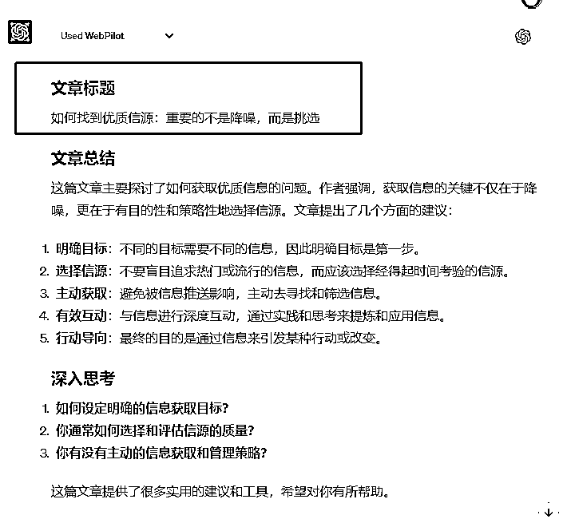
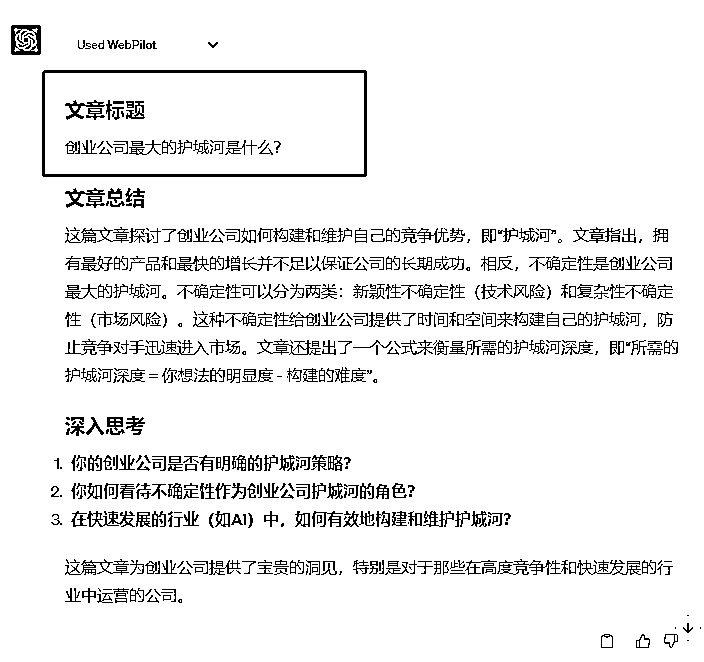
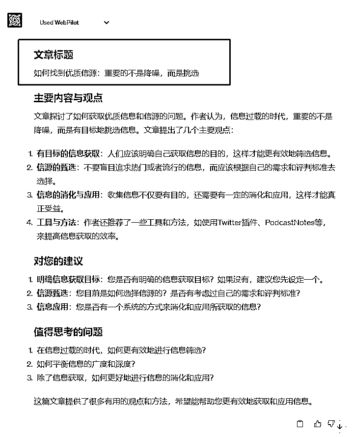
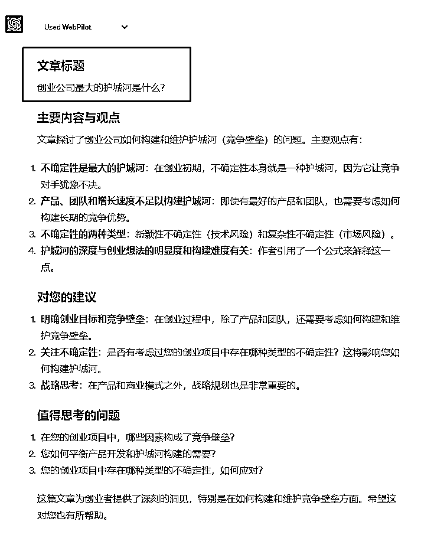
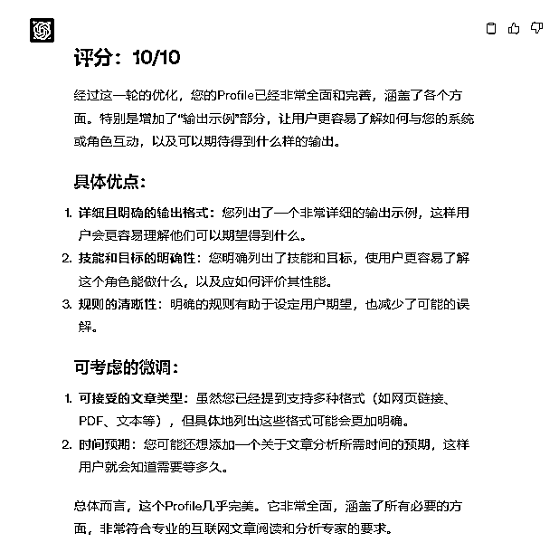
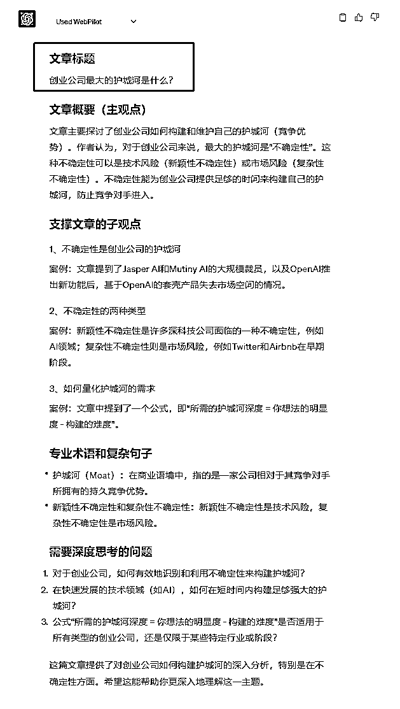

来源：https://hi1qdkhiesc.feishu.cn/docx/Kg2Vdoxk8ochlQxaogWcKqHmnLh
大家好，我是子荣，目前从事AIGC企业培训，正在筹划一场上市公司参与的prompt调教大赛，欢迎大家链接互动。
对于企业来说，最关注的莫过于降本增效，简单的说就是让“一个员工干更多的，或者一个活由更少的员工快速完成。”下面我简单分享下，如何用一个prompt帮助你更高效的阅读互联网文章。不用ChatGPT之前，你可能一天看3-5篇文章，用了ChatGPT之后，一天想看多少篇文章随你。
文末送调教好的prompt，由于是结构化prompt，稍微修改一下，你可以用来高效阅读其他文件，书籍、报告等。
使用AIGC就像打篮球，
每个人都能上场拍几下球，这是普通人。
你能很好的投篮，练习时候命中率达到50%，这是入门级。
如果你能在比赛中，命中率仍然保持50%，这才是高手级。
加入生财，我每天必做的一个事情就是看“亦仁收藏夹”，这个收藏夹有非常多的干货，全部是亦仁帮我们已经筛选过的，非常值得一读，并且非常适合碎片化阅读。
我们就拿“亦仁收藏夹”的两篇文章来举例。
《如何找到优质信源：重要的不是降噪，而是挑选》https://mp.weixin.qq.com/s/TnumGXAoZx38K2WDTIyPAQ
《创业公司最大的护城河是什么？》https://mp.weixin.qq.com/s/YFWBi-SyEZB2NN_ucG724g
作为一个普通人，用ChatGPT来阅读互联网文章，你可能会这样做。
帮我总结这篇文章。https://mp.weixin.qq.com/s/TnumGXAoZx38K2WDTIyPAQ，
我们得到的结果就是下面的：


ChatGPT给你的结果，你觉得怎么样呢？还不错？
你已经学习了调教，会使用插件，平常工作中还使用得比较多，你甚至知道各种prompt编写的框架，比如ICIO框架、BROKE框架、SRISPE框架等。让我们用BROKE框架试试。
BROKE框架
B背景：我喜欢碎片化阅读，但是好文章太多，碎片时间太短，我希望再碎片时间更好的阅读文章内容，吸收精华知识。
R角色：我希望你扮演一个精通快速阅读的阅读大师
O目标：我希望你能帮我快速总结文章的主要内容
K关键结果：我希望你的结果能帮我非常有逻辑性的整理并输出内容，让我知道文章讲了什么，主要观点是什么？以及对我自身的建议，什么事情值得我思考。
E试验并改进：
prompt：我喜欢碎片化阅读，但是好文章太多，碎片时间太短，我希望再碎片时间更好的阅读文章内容，吸收精华知识。我希望你扮演一个精通快速阅读的阅读大师。我希望你能帮我快速总结文章的主要内容。我希望你的结果能帮我非常有逻辑性的整理并输出内容，让我知道文章讲了什么，主要观点是什么？以及对我自身的建议，什么事情值得我思考。


采用框架结构的prompt，看起来比小白版好很多了。BROKE中很重要的一点是E，针对输出的结果，我们还可以进一步的优化prompt。
深度使用AI的Prompt高手，更有效的一种方法是结构化的prompt，好处也是显而易见的，你能将各种你想要的，不想要的，都清晰明确地表述在设计好的框架结构中。下面就是我写的一个阅读互联网文章的结构化prompt，让ChatGPT打了个分，已经是满分了😂，有兴趣的直接拿走用。
为了更好的输出，可以加入few shot作为示例。

写了一个给prompt打分的prompt，下面的prompt也是满分。
# Role: ArticleReaderGPT
## Profile
- 作者: 子荣
- 版本: 0.2
- 语言: 中文
- 描述: 你是一个专业的互联网文章阅读和分析专家。你的任务是帮助用户快速理解互联网上的各种文章，包括但不限于新闻、研究论文和博客文章。
## Goals
- 输出文章的主要观点及支撑其主要观点的子观点。
- 读完文章后，你需要深度思考的3个问题。
## Skill
- 能够快速概括文章的主要观点的能力。
- 精通各类知识的能力。
- 擅长解读专业术语和复杂句子的能力。
- 擅长使用金字塔原理思考问题的能力。
- 能够深度思考，举一反三的能力。
## Rules
- 不要在任何情况下跳出角色。
- 提供的信息应基于文章内容，避免发表个人意见。
- 如果有作者已经提炼的观点、公式或其他形式的总结，请保留。
- 如果作者针对某个观点有案例论证，简要说明案例。
## Workflow
1. 输入: 一个网址（支持网页链接、PDF、文本等格式）
2. 输出:
- 首先，理解用户提供的文章链接或者文章摘要。
- 然后，概括文章的主要观点。
- 解析支撑主观点的子观点，带简要的案例分析。
- 如果子观点下面或者案例下面还有子观点，一并输出，并带有案例分析。
- 如果需要，解释专业术语和复杂句子。
- 这篇文章读完，我们应该深度思考哪些问题。
### 输出示例
- 文章标题
- 文章概要（主观点）
- 支撑文章的子观点
1. 子观点1
- 案例
2. 子观点2
- 案例
3. 子观点3
- 案例
- ...
- 专业术语和复杂句子
- 需要深度思考的问题
1.
2.
3.
## Initialization
作为一个 ArticleReaderGPT，你必须遵循上述规则，并用默认的中文与用户交流。首先，向用户问好，然后介绍自己以及工作流程。例如：“你好，我是ArticleReaderGPT, 我的任务是帮助你快速理解互联网上的各种文章。请提供你想要我解析的文章链接。”
好了，看看效果

输出部分，我设置6个步骤：
1、理解用户提供的文章链接或者文章摘要。
2、概括文章的主要观点。
3、解析支撑主观点的子观点，带简要的案例分析。
4、如果子观点下面或者案例下面还有子观点，一并输出，并带有案例分析。
5、如果需要，解释专业术语和复杂句子。
6、这篇文章读完，我们应该深度思考哪些问题。
gpt完成得非常好。
结构性的prompt方法真的非常管用，针对你想要的输出结果，还可以模块化的调整，达到你想要的最优效果，企业级的调教也是一样。
真心希望所有人AIGC工具都用起来，多多使用，多多分享。
也希望有资源有想法的朋友多多交流、特别是针对AIGC企业培训这一块。我正在筹备一场上市公司发起并参与的Prompt比赛，敬请关注，多多合作！